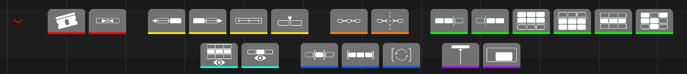
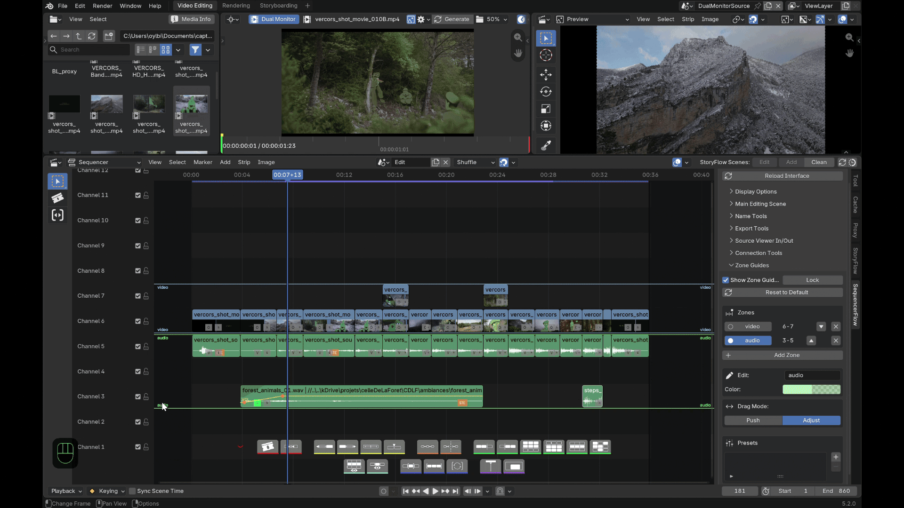

Features¶
Each section below is tagged LITE and/or PRO. See LITE and PRO for the full tier breakdown.
Contextual toolbar — LITE and PRO¶

Drawn right into the VSE, no menu diving. Every button below also has its own keyboard shortcut — see Preferences & shortcuts for the full list.
- Cut splits every selected strip at the playhead. On a SCENE strip (a storyFlow shot, say), a native split would leave both halves sharing the same underlying scene — Cut gives the right-hand half a full copy instead, so each half is independent from the start.
- Join only works on strips that are genuinely touching, on the same channel, same type and same source file — in practice, it undoes a Cut. It won't merge two different clips.
- Swap (left/right) swaps a strip, or a whole block of several touching selected strips on the same channel, with its single unselected neighbor on that side. The block moves as one rigid unit; a strip connected to another (see Strip connections) is dragged along even if only its partner was selected.
- Slip invokes Blender's own native Slip tool.
- Insert (PRO) drops the in/out range of a source — edited in either the Source Viewer or the Dual Monitor, see Source Viewer — at the playhead.
- Connect / Disconnect — see Strip connections.
- Advanced selections:
| Action | Selects |
|---|---|
| Select channel | Every strip sharing a channel with the current selection |
| Select above / below | Every strip in any channel beyond the selection's highest/lowest — not just the next one |
| Navigate next/previous | The next or previous strip in time, moving the playhead to its start |
| Selection sets | Save, recall or remove a named selection |
Selection sets are matched back by name, type, position and channel — if a strip has since moved or been renamed, recall reports a partial restore instead of guessing. - Isolate — see Isolate below. - Frame range — see Frame range below. - Follow playhead and Minimap toggle (PRO) — see Follow playhead & Minimap below.
Strip connections — LITE and PRO¶
A connection is a shared, invisible link between related strips — typically a video clip and its audio — so dragging, swapping or exporting one takes its partner along. Connect/Disconnect on the toolbar apply it to the current selection.
Connections aren't detected passively — the Connection Tools N-panel's Conditional Connect drives that explicitly, by combining criteria and applying them in one click:
| Condition | Groups strips that... |
|---|---|
| Selected strips only | ...are limited to the current selection (on by default — switch it off to scan the whole timeline instead) |
| Same start frame | ...start at exactly the same frame |
| Same end frame | ...end at exactly the same frame |
| Same channel | ...sit on the same channel |
| Same length | ...share the same duration |
| Movie-sound pairs | ...look like a matching video+audio pair, by name |
Any combination can be checked at once — a strip has to satisfy every checked condition to join a group. The common case is leaving only Movie-sound pairs checked. The same panel also lists every existing connection group, with a button to select the whole group at once.
Mainly there to prep a round-trip export: sequencerOTIO (a separate SlateFlow add-on) reads these links to keep video/audio pairs together when exporting to Resolve via OpenTimelineIO.
Isolate — LITE and PRO¶
Two independent, reversible toggles, both based on muting (so they affect audio too, not just what's visible):
| Button | Mutes |
|---|---|
| Isolate Channel | Every channel except the ones the current selection touches |
| Isolate Selection | Every strip that isn't currently selected |
Click the same button again to restore everything exactly as it was.
Frame range — LITE and PRO¶
Sets the scene's playback/render range, not just the view:
| Button | Effect |
|---|---|
| Range Selected | Fits the range to the current selection's bounds, once |
| Range All | Fits the range to every strip in the timeline, once |
| Auto Range | Keeps re-fitting the range to the current selection continuously — falls back to framing every strip the moment nothing is selected |
Follow playhead & Minimap — LITE and PRO¶
Follow playhead scrolls the view during playback to keep the playhead in a comfortable zone (25–40% of the visible width), instead of jumping or needing a manual re-center.

Minimap (PRO) toggles a 2D (time × channels) overview of the whole timeline, shown as a fixed-size panel in the corner — one silhouette per strip, colored from its own color tag or its type's native color, plus an outline of the current viewport. Click or drag it to recenter the main view there.
Zone guides — LITE and PRO¶

Colored separator lines across a range of channels (audio, video, effects...), configurable in the Zone Guides N-panel.
- Show Zone Guides / Lock show or hide the overlay; Lock freezes the boundaries against dragging in the VSE without hiding them.
- The zone list: clicking a zone's name makes it active (editable below). Its channel range is shown read-only — there's no field to type it directly. To change it: drag a boundary in the VSE (click-drag the colored line near the left edge of the visible timeline — that's the only spot that's draggable, not anywhere along the line; no modifier key needed, Esc cancels), or use ▲/▼, Add Zone, Reset or a preset.
- ▲ / ▼ don't reorder the list — they swap a zone's position with its neighbor, each keeping its own size, name and color.
- + Add Zone adds a new zone right above the last one.
- The box below the list edits the active zone's name and color.
- Drag Mode decides what happens to the other zones when one is resized:
| Mode | Effect |
|---|---|
| Adjust (default) | Only the one directly touching neighbor follows — everything else stays put. |
| Push | The rest of the stack in that direction shifts along, like an accordion. |
- Presets save the current layout under a name, recall it, or delete it.
Per scene
Zones and presets belong to the current scene, not the whole file — another scene (or the Source Viewer) has its own configuration.
Batch rename & scene sync — LITE and PRO¶
The Name Tools N-panel renames a selection or the whole timeline (Find/Replace, or Set Name with an optional prefix/suffix — the suffix can auto-number instead, in timeline order, not selection order). A live preview shows what the first affected strip would become.
Renaming a SCENE strip also renames its underlying scene to match, automatically. Sync Scene Names re-applies that same strip→scene sync on demand, without renaming anything first.
Export segments — LITE and PRO¶
The Export Tools N-panel renders the timeline to one video file per segment — not "each selected strip," and with no separate audio mixdown (every unmuted sound strip in a segment's range mixes into that segment's video automatically).
- Export Range (In/Out) is the same frame range as Frame range above, shown again here since it drives the export.
- A cut is placed only where the topmost visible strip actually changes — strips stacked underneath don't force their own cut. The panel shows a live count of the segments this would produce.
- Naming:
| Mode | Segment name from... |
|---|---|
| Topmost Strip (default) | Whichever strip is topmost in that segment |
| Custom Pattern | A base name + prefix/suffix/numbering — same engine as Batch Rename |
A frame-number suffix is added on top either way, as the real collision guard (a strip can be topmost again later):
| Suffix mode | Adds... |
|---|---|
| Off | Nothing |
| Standard | A 0001-NNNN duration count |
| Timeline | The actual Timeline frame numbers |
| - Rendering uses the scene's own Output Properties (format, codec, | |
| path) — there's no separate format picker here. The panel warns if the | |
| output path is still Blender's default, usually a sign those properties | |
| were set on a different scene tab. |
Source Viewer — PRO¶

Real 3-point editing in Blender, through two interchangeable ways of previewing a source:
- Dedicated scene: the classic Source Viewer — set IN/OUT points on any clip in its own scene, with your edit scene untouched while you browse footage.
- Dual Monitor: an independent second preview (built on the Movie Clip Editor) with its own playhead, image and audio — genuinely simultaneous with the main edit, not a toggle between the two.
Double-clicking a file in the File Browser (or dragging it in) always goes to whichever one is currently active: into the Dual Monitor if a Clip Editor area is set up to show it, otherwise into the classic dedicated scene. A shared media history and IN/OUT points work across both — switch between them without losing your place. Before loading anything, the Folder Media Info overlay shows a comparison table (fps, resolution, duration, color profile) directly in the File Browser, so you can compare candidate files without opening each one first.
The Dual Monitor adds a few things of its own: its own I/O shortcuts to set in/out directly in the Clip Editor, a Reset In/Out button, a timecode display toggle, and Blender's own native per-clip proxy generation (25/50/75/100%, adjustable quality) — a 50% proxy is built and switched to automatically in the background for every new clip you load, so scrubbing stays smooth without you having to set it up by hand.
Either way, Insert drops the selected in/out range at the playhead, rippling every later strip out of the way automatically.
Strip curves — PRO¶

Volume and opacity curves drawn directly on strips — no need to open the Graph Editor:
- Ctrl+click anywhere on a strip adds a keyframe there.
- Click and drag an existing key to move it.
- Double-click a key opens its exact Frame/Value for direct editing.
These drive real Blender F-Curves on the strip's own volume or
blend_alpha — opening the Graph Editor on the same strip shows the same
keys.
Speed control — PRO¶
A small s badge next to the opacity icon on every retimable strip (not effect strips — SOUND included, so a connected video+audio pair can be retimed together), colored grey/blue/purple for normal/set/frozen. Click it for the Set Speed dialog: a percentage (100 = normal, 50 = half speed, 200 = double), or Freeze Frame to hold the in-point instead.
Both drive Blender's own native retiming operators — never a parallel
speed model. The factor is also written to the strip
(strip["otio_speed"]) so sequencerOTIO
can carry it over on export.
Advanced audio — PRO¶
- A real-time VU meter (dB level plus peak since last reset), docked to the left of the VSE.
- Every sound strip gets a channel badge showing its real format at a glance (Mono / Stereo / 5.1 / 7.1).
- Click a badge to force that strip to mono, with its own Left / Center / Right pan.